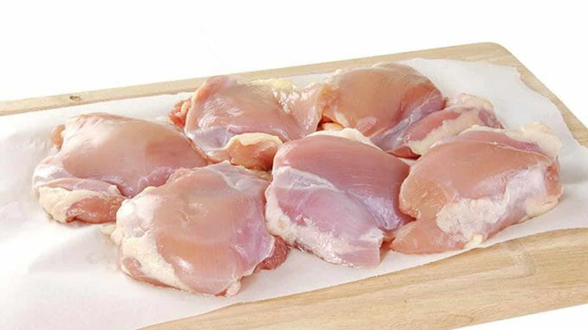
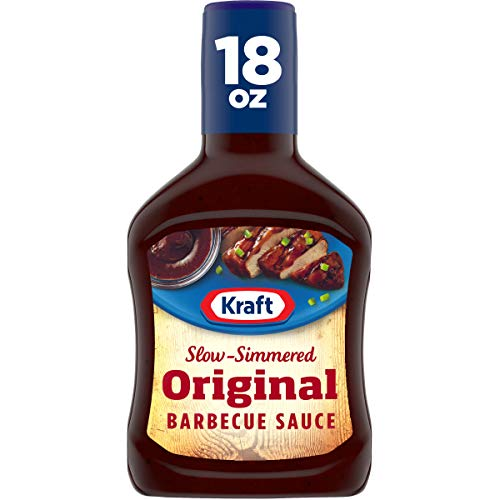
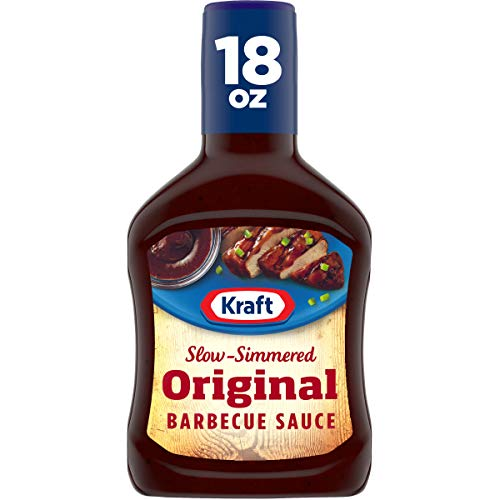
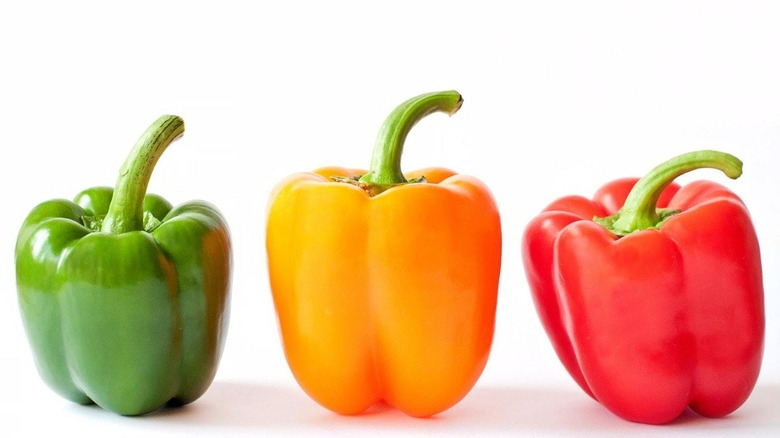
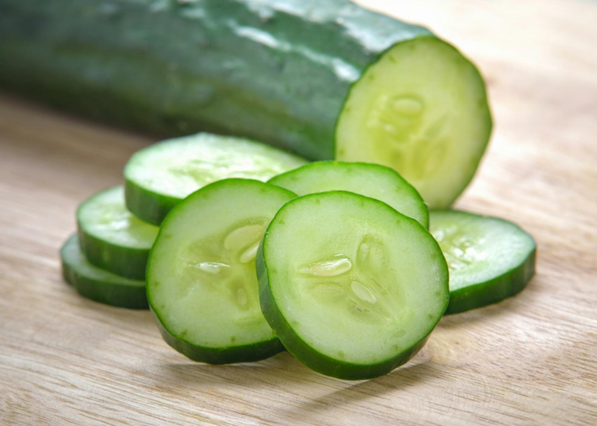
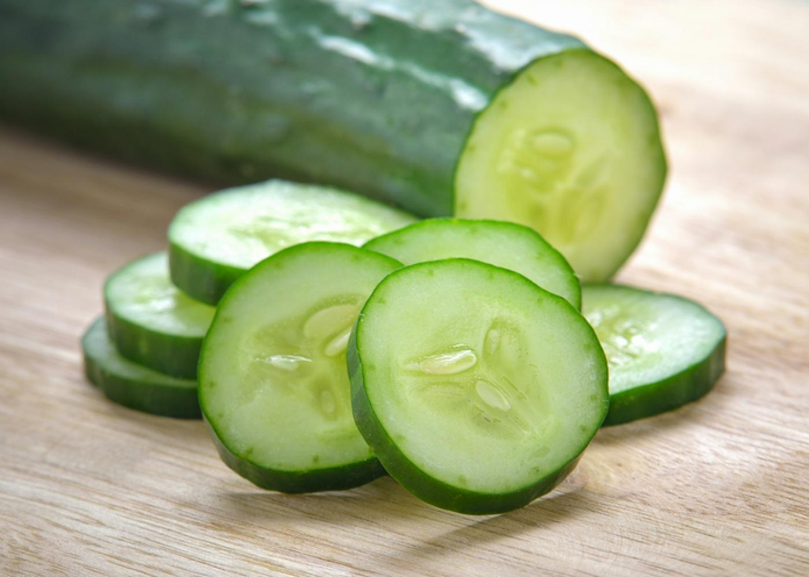

1.Chop several pieces of boneless chicken to smaller pieces, then marinate said pieces with ground spices (cumin, red pepper, turmeric, garam masala, black pepper), salt, and yogurt. Barbecue sauce can be optionally added as well. Leave to dry for an hour



 

2.Chop some fruits,vegetables (bell peppers, tomatoes, cucumbers,etc) to be added on the kebab stick.
 

3.Acquire several kebab sticks, and for each stick, add a several pieces of meat, fruit, and vegetable.
4.Heat a pan with vegetable oil, or an grill (electric or gas). Add as many kebabs as you can, and cook for 15 minutes. Turn frequently to ensure all sides are properly cooked. Once done, repeat with the next batch until all are cooked.
 Return to index
Return to index